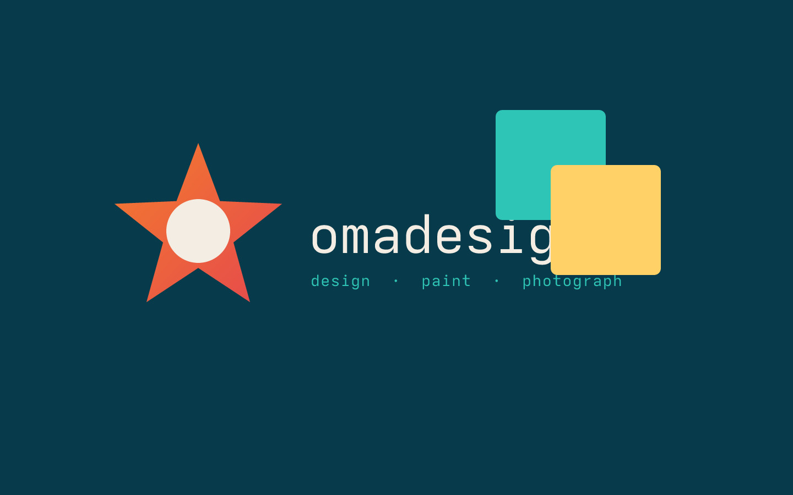
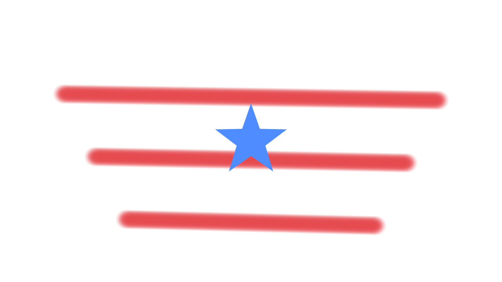
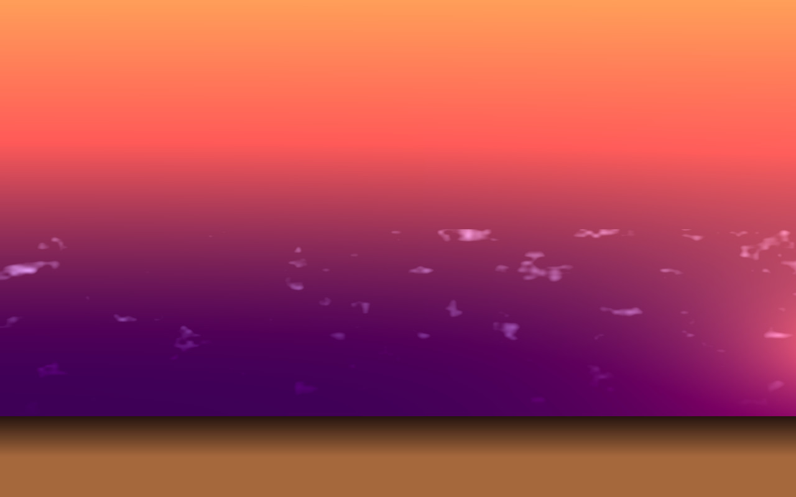
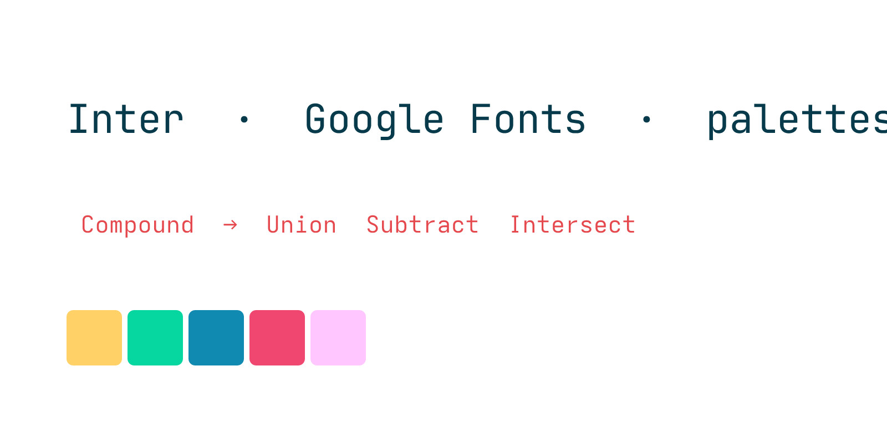
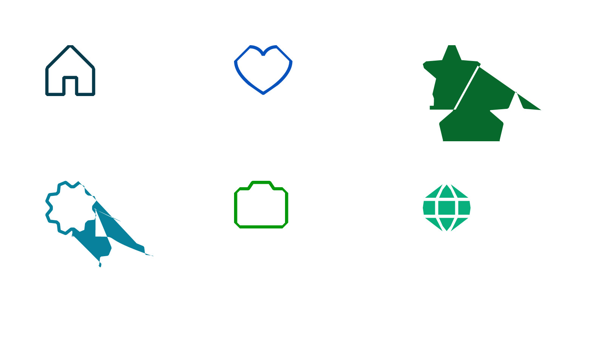
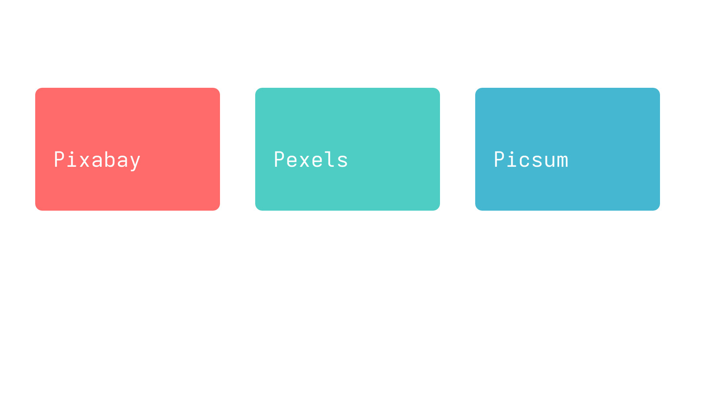
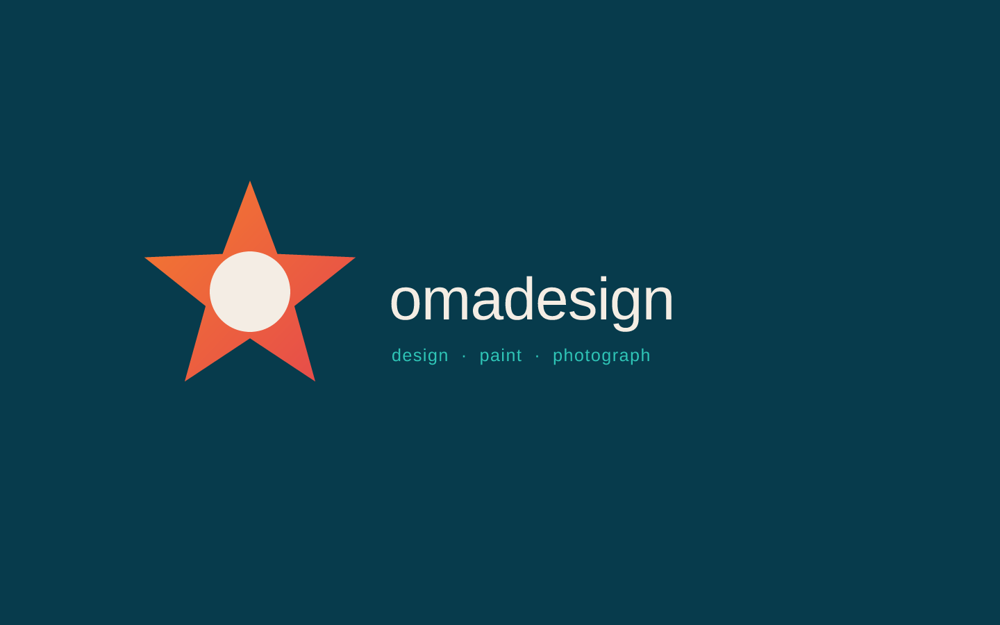

Your Linux, for making things.
A native studio. Design, paint, photograph. One document, one layer stack. Theme from ~/.config. Type you can type into. Now with shape & asset browsers and a big welcome.
- Free, MIT
- aarch64 Asahi + x86_64
- glibc 2.35
- No Electron
curl -fsSL https://raw.githubusercontent.com/michaelmonetized/omadesign/master/scripts/install-remote.sh | sh
Releases
What's new in v0.0.0.0alpha-rc
7 commits, 6 stacked PRs → fast-forward to master, built locally with zig cc (glibc 2.35).
Fonts, full
fontconfig + ttf_parser, 2000 cap. Google Fonts browser (30 bundled, ureq → ~/.local/share/fonts/omadesign/google).
Max font
Scans ~/Projects next/font/google, most frequent wins (Inter). Shown as default.
Palettes
Custom palettes at ~/.config/omadesign/palettes.json — New/Rename/Delete, +Fill/+Stroke, Import/Export.
Compound
Combine (even-odd) / Release + multi-boolean Union/Subtract/Intersect/Xor.
Browsers
◇ Shapes (Phosphor/LineIcons/Heroicons/Feather) + ⬙ Assets (Pixabay/Pexels/Picsum fallback).
Welcome 2.0
Big 720 px square, tabs All/Web/Print/Social/Photo/Identity, 210×112 cards, transparent/bleed/safe/artboards ×1–16.
Canvas
Artboard frames, bleed red + crop marks, safe green inset. Checker when transparent.
Three rooms, one house.
Switch persona from the top bar. Keys stay where they already live in your fingers.
Design
Marks, posters, boolean, live type.
Pixel
Brush, clone, wand. On a raster layer.
Photo
Grade, crop, Place in Design.
Just some of the highlights
Screenshots regenerated headless via cargo run --bin gen_media + compositor::export_png → JPEG.






Built like desktop software.
Your chrome, not ours
Colours from the Omarchy theme on disk. Font from fontconfig. No baked orange.
Asahi is first class
aarch64 tarball, zig-linked to glibc 2.35. Same release as x86_64.
Type is a string
Caret, Enter for a line, Character studio, OpenType kern/liga/tnum/smcp.
No runners
Binaries are built on this machine and uploaded. Microsoft does not get a penny.
Take this with you
Manual, contributing, roadmap. The site is Catppuccin mocha until you ask for light.
